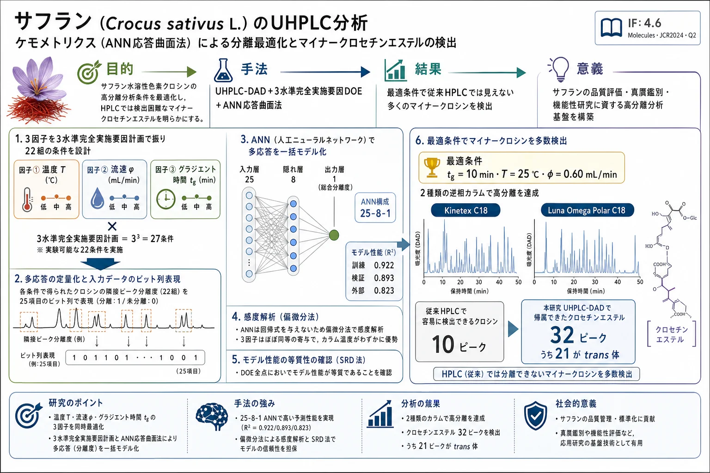

サフラン（Crocus sativus L.）のUHPLC分析：ケモメトリクス（ANN応答曲面法）による分離最適化とマイナークロセチンエステルの検出

<!-- D'Archivio AA, Di Donato F, Foschi M, Maggi MA, Ruggieri F. UHPLC Analysis of Saffron (Crocus sativus L.): Optimization of Separation Using Chemometrics and Detection of Minor Crocetin Esters. Molecules 2018, 23, 1851. doi:10.3390/molecules23081851 の全訳密度日本語版。 -->
補足（本サイトでの位置づけ）: 本論文は漢方処方の論文ではないが、天然物（生薬・香辛料）の水溶性成分を UHPLC で高分離し、ケモメトリクス（実験計画法＋人工ニューラルネットワーク）で分離条件を最適化するという、当サイトが扱う生薬 QC・指紋分析・多成分定量のメソッド開発と完全に地続きの研究である。サフラン（西紅花・番紅花）は日本薬局方・中国薬典にも収載される生薬「サフラン（蕃紅花）」そのものであり、その主色素クロシン類は品質評価・産地判別（トレーサビリティ）・偽和（gardenia 果実による混ぜ物）検出の指標となる。とくに注目すべきは、回帰式を前提としない ANN を「多応答（22組の隣接ピーク分離度）を1つのモデルで扱う」道具として使い、被験物質ペアをビット列で符号化するという発想で、分離度という複数応答の同時最適化（多目的最適化）を実現している点。従来 HPLC では6〜10本しか見えなかったクロシンが UHPLC＋最適化で32本まで見えるという結果は、「分離が不十分だと産地判別などのケモメトリクス解析が成分情報の欠落で不利になる」という、指紋分析の前提を裏づける実例でもある。
書誌情報
- 原題: UHPLC Analysis of Saffron (Crocus sativus L.): Optimization of Separation Using Chemometrics and Detection of Minor Crocetin Esters
- 和題（本稿）: サフラン（Crocus sativus L.）のUHPLC分析：ケモメトリクス（ANN応答曲面法）による分離最適化とマイナークロセチンエステルの検出
- 著者: Angelo Antonio D'Archivio（1,*）, Francesca Di Donato（1）, Martina Foschi（1）, Maria Anna Maggi（2）, Fabrizio Ruggieri（1）
- 所属: （1）ラクイラ大学 物理・化学科（Dipartimento di Scienze Fisiche e Chimiche, Università degli Studi dell'Aquila, L'Aquila, イタリア）／（2）Hortus Novus srl（L'Aquila, イタリア）
- 責任著者: A. A. D'Archivio（angeloantonio.darchivio@univaq.it）
- 掲載誌: Molecules（MDPI）2018年, 23巻, 1851
- DOI: 10.3390/molecules23081851
- 投稿/受理/公開: 2018年6月29日投稿 / 2018年7月22日受理 / 2018年7月25日公開
- ライセンス: © 2018 著者ら。MDPI（Basel, スイス）。CC BY 4.0 オープンアクセス
- キーワード: サフラン（saffron）／クロシン（crocins）／UHPLC 分析／分離最適化／人工ニューラルネットワーク（ANN）／応答曲面法（RSM）
- 雑誌インパクトファクター: 4.6（Molecules・JCR2024・Q2。Chemistry, Multidisciplinary で 75/239＝Q2、Biochemistry & Molecular Biology で 82/319＝Q2）
要旨（Abstract）
ダイオードアレイ検出（DAD）を組み合わせた超高速液体クロマトグラフィー（UHPLC）を、サフラン（Crocus sativus L.）の主要赤色成分である クロセチンのモノ糖・ビス糖エステル（クロシン, crocins） および他の極性成分の分離・検出の改善に適用した。
応答曲面法（response surface methodology, RSM）を用いて、Kinetex C18（Phenomenex）カラムでのクロマトグラフィー分離度を最適化した。この際、カラム温度、溶離液流速、直線的溶離液濃度グラジエントの勾配（slope） の複合効果を考慮した。上記因子の適切な組み合わせを同定するために、3水準完全実施要因計画（three-level full-factorial design of experiments） を採用した。分離条件が22組の隣接ピークの分離度に及ぼす影響を、標的被験物質を同定するためにビット列表現（bit string representation）を用いた 多層人工ニューラルネットワーク（artificial neural network, ANN） で同時にモデル化した。
最適分離条件下で収集したクロマトグラムは、質量分析データによってすでに特性評価され通常 HPLC で検出されるものよりも 多数のクロセチンエステル を明らかにした。新規の Luna Omega Polar C18（Phenomenex）カラムで実施した UHPLC 分析でも、多数のクロセチン誘導体が確認された。新たに見出されたサフラン成分の質量分析データ取得と化学構造の解明に向け、さらなる研究が進行中である。
1. 序論（Introduction）
サフラン（Crocus sativus L. の乾燥した柱頭）は、着色・風味特性のため世界中で食品添加物として用いられる貴重な香辛料である。料理用途に加え、サフランは古来より伝統医療の天然薬とみなされ、現在はその成分の生物活性を調べる生物医学研究の成長分野の主題となっている[1, 2]。
クロシン（crocins） は、ポリエンジカルボン酸である クロセチン（crocetin） の水溶性のモノ・ジ配糖体エステルのファミリーであり、サフランの高く評価される色の主要成分である[3, 4]。サフラナール（safranal, モノテルペンアルデヒド） と ピクロクロシン（picrocrocin, サフラナールの配糖体） は他の2つの主要成分で、それぞれ主に香りと苦味に寄与する。
ダイオードアレイ（DAD）または質量分析（MS）検出を備えた高速液体クロマトグラフィー（HPLC）は、品質管理と地理的トレーサビリティの両目的で、サフランの水溶性成分の同定・定量に広く適用されてきた[3–10]。ピクロクロシンに構造的に関連する化合物やフラボノイド、とくにケンペロール誘導体も、水系または含水アルコール抽出物の HPLC 分析で決定できる[4, 9–12]。
現在までに、16種のクロシンの化学構造が MS データで同定 されている[4–6]。これらは糖部分——グルコシド（g）、ゲンチオビオシド（G）、ネアポリタノシド（n）、トリグルコシド（t）——およびクロセチンの cis / all-trans 異性体において異なる。しかし、比較的強いクロマトグラフィーピークを与える 主要クロシン（6〜10化合物の間） だけが、HPLC のサフラン特性評価で容易に検出できる[3, 5, 7–10]。とくに、trans-クロセチン ビス(β-D-ゲンチオビオシル)エステル、trans-クロセチン (β-D-ゲンチオビオシル)(β-D-グルコシル)エステル、cis-クロセチン (β-D-ゲンチオビオシル)(β-D-グルコシル)エステルは、全クロシンの95%以上を占め、他の少数のクロセチン誘導体とともに観測クロマトグラムを支配する。
MS 検出は、サフラン成分の構造情報の収集に不可欠ではあるが、類似の分離条件下で DAD が明らかにするものと比べて追加のクロシンを浮かび上がらせることはできない[4–7]。近年、イタリア産・イラン産サフランの HPLC-DAD 分析で 20種を超えるクロシン が同定され、新たに見出されたマイナークロセチン誘導体の一部はサフラン産地決定の強力なマーカーとなることが判明した[13, 14]。しかし、HPLC クロマトグラムのケモメトリクス処理に基づく地理的判別[13]は、サフラン組成に関する情報の部分的損失のため、不十分な分離条件下では効率が低下しうる。
UHPLC は、従来 HPLC より高速分析・高分離効率であるにもかかわらず、サフラン特性評価にはこれまで稀にしか適用されてこなかった[15–17]。本研究の主目的は、グラジエント溶出下の UHPLC-DAD により極性サフラン成分（とくにクロシン）の分離を高め、水抽出物の定性的化学組成に関する情報を改善することである。移動相流速、直線溶離液グラジエントの勾配、カラム温度がクロマトグラム分離度に及ぼす同時・相互作用的影響を、応答曲面法（RSM）で調べた。上記因子の適切な組み合わせを同定するために完全実施要因計画（DOE）を用いた。UHPLC 分離度を記述する応答曲面は、クロマトグラム中の隣接ピークペアの分離度をモデル化するよう訓練した ANN の出力を組み合わせて生成した。
最適分離条件下の Kinetex C18（Phenomenex, Torrance, CA, 米国）カラムでの UHPLC-DAD 分析により、新規クロセチン誘導体の同定が可能になった。予想外に多数のクロシンは、極性修飾表面をもつ新規固定相を充填した Luna Omega Polar C18（Phenomenex）カラムでの UHPLC 分析で確認された。予備的な質量スペクトルデータは、新たに見出されたサフラン成分をクロセチンエステルのファミリーに帰属することを支持し、その化学構造を明らかにするためにさらなる研究が進行中である。
2. 結果と考察（Results and Discussion）
2.1. ANN に基づくクロマトグラム分離度のモデル化
2.1.1. ピークペア分離度の ANN モデル化
人工ニューラルネットワーク（ANN）は、以前からクロマトグラフィーにおいて、RSM 最適化[18–20]や保持予測[21–25]を含む複雑な回帰問題の処理に用いられてきた。本研究では、移動相流速（φ）、直線溶離液グラジエントの継続時間（tg）、カラム温度（T）がサフラン抽出物のクロマトグラム分離度に及ぼす影響を調べるために、ANN 多変量モデリングを適用した。
完全実施要因 DOE に従って定義した上記因子の組み合わせで観測したクロマトグラムを ANN ベースモデルの構築に用い、検証用に追加で8本のクロマトグラムを取得した（3.6.1節）。原著 Figure 1 は、クロシンの吸収極大である 440 nm で検出した代表的な UHPLC クロマトグラムを示す。観測ピークの大部分は、スペクトル特徴（3.5節）に従って trans- または cis-クロシン（Table 1）に安全に帰属できる。
クロマトグラム中で観測される隣接ピークの分離度に関連するすべてのデータを同時に処理できる 単一の ANN モデル を、各被験物質ペアを表現する ビット列（bit string） を用いて生成した。同様の戦略は以前、塩素化汚染物質のガスクロマトグラフィー分離の最適化[20]や、多重直線グラジエント溶出条件下での生物活性溶質の HPLC 保持時間予測[26]に採用された。
φ、tg、T に対応する3つのニューロンに加え、保持時間の順に並べた対象クロマトグラフィーピーク（Table 1）に対応する 22個のニューロン を ANN 入力層に含めた。与えられたペア分離度 Rij を対応するサフラン代謝物の組 ij と結びつけるため、これらすべての入力を、i 番目と j 番目（値1）を除いて0に設定した。したがって、ネットワークは 25個の入力変数（うち3つは分離系を記述、残り22個は被験物質ペアに関連）を処理するよう求められた。
訳者補足（ビット列表現の妙）: 通常、隣接ピークペアごとに別々のモデルを作ると、22組なら22個のモデルが必要になり、データが分散して各モデルの学習が不安定になる。この論文の工夫は、「どのピークペアの分離度を予測しているか」を22ビットの ON/OFF（該当する2ピークだけ1、他は0）でネットワークに教えることで、全ペアのデータを1つのネットワークにまとめて学習させる 点にある。これにより、少数の DOE 実験点から得た全ペアの分離度データを最大限に活用でき、ペア間で共有される「分離条件→分離度」の一般法則を1つのモデルに凝縮できる。
各点の分離度データとデータセット構成
DOE の各点で 21個の分離度 を測定したので、ANN 較正用に 21 × 29 = 609 データサンプル、外部予測用に 21 × 8 = 168 データサンプルが利用可能であった。変数のオートスケーリング後、較正データに Kennard-Stone アルゴリズム[27]を適用して、ANN 学習に用いる訓練セット（486 データサンプル）を設計した。残り 123 データサンプルを ANN モデル検証に用い、ネットワークアーキテクチャ・活性化関数・学習継続時間の最良の組み合わせを選定した。
サフラン水溶性色素成分の UHPLC 分離は、2015年に L'Aquila（アブルッツォ, イタリア）で生産された試料を、選定した DOE で定義した様々な実験条件および外部検証用に設計した追加データ点で分析して最適化した。UHPLC 装置のオートサンプラーで保持した同一抽出物の反復分析では、サフラン代謝物のピーク面積は抽出から24時間以内で顕著に変化しなかった。いずれにせよ、標的被験物質の分解を避けるため、UHPLC 分析は毎日抽出した試料で実施した。
440 nm で検出した観測クロマトグラム中の連続ピークペア Rij（j = i + 1）の分離度を予測するために、多くの代替ネットワークを訓練した。最終的に選定した最適ネットワークは、最低の検証誤差を与えるものであった。訓練手順では、(−0.1, 0.1) の範囲でランダムに生成した初期重みの更新を、検証誤差が増加し始めるまで実施した。最良モデルが特定の初期重みの組み合わせで生成されたのではないことを保証するため、最適ネットワークを 100回再訓練 して出力を平均した。
ペア分離度 Rij ではなく log(Rij + 1) をネットワーク応答として選んだ。この変換がより均質な誤差分布を与えたためである。最良の検証性能は、隠れ層に 双曲線正接（hyperbolic tangent）活性化関数 をもち 65 エポック 学習した 25-8-1 ネットワーク で得られた。訓練・検証・外部予測の決定係数はそれぞれ 0.922、0.893、0.823、関連する標準誤差はそれぞれ 0.065、0.071、0.097 であった。上記統計パラメータは良好なモデルを示唆し、計算/予測応答と目標応答の一致（原著 Figure 2）が理想線付近のランダム分布を示すことで確認された（少数のモデル化が劣るデータサンプルを除くが、これらの点は特定の溶質や実験条件を指すものではない）。
ANN モデルの感度解析と SRD 評価
ANN モデリングは当てはめ式（fitting equation）を与えないため、見出したモデルの解釈は容易でない。この制限を克服するため、入力変数の微小変化に対するネットワーク出力の感度を評価しようとする 偏微分法（partial derivative method）[28]を適用した。この手順は、分離系に関連する3因子 T、φ、tg すべてがクロマトグラフィー分離度に同様に影響するが、カラム温度が他の2因子よりわずかに優勢 であることを明らかにした。
ANN モデルは、Héberger が方法・モデルのランキングと比較のために開発した ランキング差の総和（sum of ranking differences, SRD）[29]でも評価した。とくに、DOE の様々な点でのモデル性能を比較するために、ANN 残差を SRD で処理した。SRD は、参照として用いた DOE の中心点に対するデータランキングの絶対差を合計して計算した。SRD 解析は乱数によるランクの比較で検証した。DOE の全点に関連する計算 SRD 値は、当てはめたガウス曲線の95%信頼区間内に収まった。したがって、DOE で定義した様々な実験条件における近接ピークペアの分離度をモデル化するネットワーク能力は、実質的に同じである。
2.1.2. 全体分離度の応答曲面の生成
複雑混合物の成分の適切なクロマトグラフィー分離を見出すことは、多応答最適化問題（multi-response optimization problem） である[30]。理想的には、可能な限り多くの被験物質を分離・検出するように分離条件を設定すべきである。しかし、分離変数の変化はクロマトグラムの異なる領域での近接ピークの重なりの程度に同様には影響しないため、妥協解（compromise solution） を見出さねばならない。
本研究では、多応答 ANN 出力を単一応答に変換するため、log(Rij + 1) 値の中央値（medium）として 全体分離度（global resolution, RG） パラメータを定義した。各実験条件について、21個すべての予測応答を RG の計算に含めるのではなく、部分集合のみを考慮した。とくに、実験条件にほとんど依存しない log(Rij + 1) 値をもつ、よく分離されたか強く重なったピークを与える被験物質ペアを除外した。ペア 4-5、5-6、7-8、9-10、11-12、12-13、13-14、14-15、15-16、21-22 を最終的に保持した。原著 Figure 3 は、tg を 0.6、0.8、1.0 min に固定した場合の T と φ の関数としての RG の3次元プロットを示す（注：本文中の tg 表記は 8/10/12 min の3水準に対応。Figure 3 のキャプションは 8/10/12 min）。
RG の応答曲面の汎化能力は、外部条件で log(Rij + 1) 値を許容精度で推定できる ANN モデルの事前外部検証によって間接的に試験した。加えて、DOE 外部の8点での観測 RG 値も予測値とよく一致した。Figure 3 の RG 曲面プロットの最大領域は、与えられた tg 水準でクロマトグラム中の最良の全体分離度を提供する T と φ の適切な組み合わせを同定する。
tg の影響について、曲面形状はこの因子に中程度に依存するが、tg の増加は曲面の系統的な上方シフトに従って分離を改善する。tg の減少は溶出中の移動相組成のより急峻な変化を意味し、サフラン成分の分離を明らかに促進しない。tg = 10 または 12 min では、T と φ の両方について最低水準に近い比較的広い領域が観察できる。応答曲面の形状は、分離度に対する T と φ の効果が互いに独立でないことを示唆する。とくに、T はより高い φ 値でのみクロマトグラム分離度に影響し、このパラメータは曲面プロットの最大値付近ではほぼ無視できる影響しかもたない。
実験ドメイン内の最適条件は、tg を最大水準、T と φ を最小水準に設定（tg = 12 min, T = 25 °C, φ = 0.60 mL/min）することで定義された。曲面の最終検証のため、この点に近いクロマトグラム（tg = 10 min, T = 25 °C, φ = 0.65 mL/min）を収集した。この点の観測 RG 値（0.320）は予測値（0.322）とよく一致した。この因子の中間水準以上での tg の影響が小さいため、tg = 12 min・T = 25 °C・φ = 0.60 mL/min と tg = 10 min・T = 25 °C・φ = 0.60 で収集したクロマトグラムは分離度の点で顕著な差を示さなかった。したがって、tg は最終的に 10 min に設定した。
2.2. Kinetex C18 カラムを用いた UHPLC サフラン分析
ANN 最適化段階で調べた L'Aquila（アブルッツォ, イタリア）産サフランに加え、2015年にモロッコとイランで生産された他の2試料を本研究で分析した。3つのサフラン試料すべてを紫外可視（UV-vis）分光光度法で特性評価し、ISO-3632 ガイドラインに従って最良品質カテゴリー（I） に属することが判明した[31]。とくに、着色力を定量する観測 E¹%₁cm(440 nm) 値はそれぞれ 254、285、253 であった。3つのサフラン試料が与えたクロマトグラムは、ピーク相対強度において中程度の差のみを示した。さらに、水抽出物と水–メタノール抽出物は非常に類似したクロマトグラムを示した。したがって、抽出媒体中のメタノールの存在によって潜在的に生じうるクロセチンのメチルエステル形成は除外できる。
原著 Figure 1A は 440 nm 検出下の最適分離条件での観測クロマトグラムを示す。Table 1 は検出溶質の保持時間と暫定的な定性同定を示す。RT が 5–12 min の範囲の化合物の大部分はクロシンの典型的な UV-vis スペクトルを示し、クロセチンの cis または trans 異性体形が明確に定義された。
一部の検出化合物 U1–U4 は、カロテノイド典型の 400–450 nm 範囲の強い吸収帯を示すものの、予想値と比べた極大位置の無視できないシフトのためクロシンとして同定できない。さらに、200–340 nm 範囲の低い吸収強度とノイズは、定性同定に診断的な二次極大の正確な同定を可能にしなかった。それでもなお、32個のクロマトグラフィーピークがクロセチンエステルに安全に帰属 できる。最近の研究[13, 14]と一致して、これは Crocus sativus L. 柱頭に存在するクロセチン誘導体の数が HPLC-MS で構造的に特性評価されたものより多いことを確認する。さらに、32クロシンのうち21が trans-クロセチン誘導体 である。このような多数の誘導体が、これまで同定された4つのグルコシド部分のみによるクロセチンのモノ・ジエステル化では生成できず、追加の糖が関与しているはずであることは明らかである。
2.3. Luna Omega Polar C18 カラムを用いた UHPLC サフラン分析
検出されたクロセチン誘導体の予想外の多さを確認するため、極性修飾表面をもつ新規固定相を充填した Luna Omega Polar C18（Phenomenex）カラムでサフラン抽出物を分析した。分離は Kinetex C18 カラムで見出した最適条件（溶離液グラジエント勾配を 3.4節記載のとおりわずかに変更した点を除く）で実施した。原著 Figure 4 は 440 nm で検出した観測クロマトグラム、Table 2 は観測ピークの暫定帰属を示す。
Kinetex C18 カラムで収集したクロマトグラムと比較して、Luna Omega Polar C18 カラムは保持の弱いサフラン成分のより良い分離を提供したが、より高い保持時間では分離度が中程度に劣った。とくに、最初のカラムのクロマトグラム（Figure 1）で最多量クロシン t-4GG の前に溶出し t-5nG に帰属された強いピークは、後者のクロマトグラム（Figure 4）ではより弱い多数のピークに分裂するように見える。一方、Kinetex C18 で全く異なる保持時間を示す最多量の cis-クロシン c-4GG、c-3Gg、および t-2G は、Luna Omega Polar C18 カラムのクロマトグラムでははるかに近接したピークを生じる。この領域での分離度の損失にもかかわらず、27クロシン（うち24が trans-クロセチン由来） が検出された（Table 2）。
分析したサフラン試料中の主要クロシンの含量を Kinetex C18 と Luna Omega Polar C18 の両カラムを用いて（3.5節記載の手順に従って）決定し、文献データ[32, 33]と Table 3 で比較した。3つの主要クロシン t-4GG、t-3Gg、c-3Gg の濃度は、サフラン産地・熟成に関連する中程度の変動を考慮すると、文献報告値と同等である。この結果は予想外ではない。これらの被験物質の比較的大きなピーク面積は正確に測定でき、マイナーサフラン代謝物との共溶出の可能性は観測面積をあまり変えないためである。
一方、Kinetex C18 カラムのクロマトグラムでの t-5nG と他のサフラン成分の共溶出は、この化合物の文献データや Luna Omega Polar C18 カラムのクロマトグラムから得た値と比べた高い推定濃度の原因と推測される。同様に、Luna Omega Polar C18 カラムを用いた最も保持されるサフラン代謝物の非理想的分離は、c-4GG、c-3Gg、t-2G で推定された中程度に高い濃度の原因かもしれない。本研究で用いたカラムの種類やサフラン産地にかかわらず、クロシン t-2gg の推定濃度は文献報告値より著しく低い。これは、両 UHPLC カラムが t-2gg とその直前に溶出する cis-クロシンを分離できた一方、HPLC 分析では2化合物が共溶出しうるという事実による。
要約すると、2つの UHPLC カラムは分離度の点でかなり異なるクロマトグラムを提供したものの、両固定相を用いて HPLC 分析で通常観測されるより多数のクロセチンエステルが検出された。Luna Omega Polar C18 カラムが提供した良好な性能は、分離条件の慎重な調整によってさらに改善できる（この点に関するさらなる研究が進行中）。
UHPLC カラムを MS 検出器と結合して取得した予備的質量フラグメンテーションパターンは、ここで UV-vis スペクトルに基づいて行った新規同定化合物のクロセチンエステルファミリーへの帰属を支持する。とくに、エレクトロスプレーイオン化（ESI）-MS 検出器とギ酸（1%）で酸性化した移動相を用い、質量/電荷比 50〜1200 の範囲で負・正両イオンモードで MS スペクトルを記録した。正イオンモードでは観測された擬分子イオンは主にナトリウム・カリウム付加物、負イオンモードでは脱プロトン化擬分子イオンが同定された。いずれの場合も観測されたフラグメントイオンは配糖体の脱離によって生成した。これらのデータに基づき、以下のクロセチンエステルが同定された：(i) グルコース5単位のクロシン4種、(ii) グルコース4単位のクロシン5種、(iii) グルコース3単位のクロシン4種、(iv) グルコース2単位のクロシン6種、(v) モノグルコシルクロセチンエステル2種。これらサフラン成分の化学構造を明らかにするため、さらなる UHPLC-MS 研究が計画されている。
主要データ表
原著 Table 1：Kinetex C18 カラム・440 nm 検出で見出されたサフラン代謝物
最適分離条件下の保持時間（RT）、帰属した構造または化学クラス、略号、吸収スペクトルの絶対・相対極大（λmax）。略号 b＝ANN モデリングで考慮したクロマトグラフィーピーク。既知クロシンの略号命名は文献[4]から採用。
| RT (min) | 化合物／化学クラス | 略号 | λmax (nm) |
|---|---|---|---|
| 5.34 | unknown | U1 | 230, 423 |
| 5.59 | trans-クロセチン (tri-β-D-グルコシル)(β-D-ゲンチオビオシル)エステル | t-5tG ᵇ | 262, 443, 466 |
| 5.91 | trans-クロシン | t1 ᵇ | 262, 441, 465 |
| 5.99 | trans-クロセチン (β-D-ネアポリタノシル)(β-D-ゲンチオビオシル)エステル | t-5nG ᵇ | 241, 418, 440 |
| 6.20 | unknown | U2 | 301, 443, 471 |
| 6.28 | trans-クロシン | t2 | 262, 442, 466 |
| 6.37 | trans-クロセチン ビス(β-D-ゲンチオビオシル)エステル | t-4GG ᵇ | 262, 441, 465 |
| 6.53 | trans-クロシン | t3 ᵇ | 259, 438, 465 |
| 6.60 | trans-クロシン | t4 ᵇ | 260, 440, 465 |
| 6.72 | cis-クロシン | c1 ᵇ | 256, 325, 431, 440 sh |
| 6.83 | trans-クロセチン (β-D-ネアポリタノシル)(β-D-グルコシル)エステル | t-4ng ᵇ | 261, 441, 464 |
| 7.00 | trans-クロシン | t5 | 261, 438, 464 |
| 7.05 | trans-クロシン | t6 | 260, 441, 463 |
| 7.13 | trans-クロセチン (β-D-ゲンチオビオシル)(β-D-グルコシル)エステル | t-3Gg ᵇ | 262, 441, 465 |
| 7.30 | trans-クロシン | t7 ᵇ | 260, 440, 463 |
| 7.43 | unknown | U3 ᵇ | 317, 426, 444 sh |
| 7.63 | trans-クロシン | t8 ᵇ | 260, 441, 466 |
| 7.70 | trans-クロシン | t9 ᵇ | 253, 440, 463 |
| 7.83 | unknown | U4 ᵇ | 243, 308, 413, 438 sh |
| 7.91 | cis-クロシン | c2 ᵇ | 263, 329, 440, 465 |
| 8.04 | trans-クロセチン ビス(β-D-グルコシル)エステル | t-2gg ᵇ | 260, 440, 465 |
| 8.46 | trans-クロシン | t10 ᵇ | 258, 435, 460 sh |
| 8.56 | trans-クロシン | t11 ᵇ | 252, 432, 462 sh |
| 8.66 | cis-クロシン | c3 ᵇ | 223, 265, 327, 439 |
| 8.75 | cis-クロシン | c4 | 262, 329, 440, 463 |
| 8.87 | cis-クロセチン ビス(β-D-ゲンチオビオシル)エステル | c-4GG ᵇ | 262, 326, 435, 458 sh |
| 9.06 | trans-クロシン | t12 | 264, 442, 467 |
| 9.65 | cis-クロシン | c5 ᵇ | 262, 327, 434, 457 |
| 9.70 | cis-クロセチン (β-D-ゲンチオビオシル)(β-D-グルコシル)エステル | c-3Gg ᵇ | 263, 326, 433, 460 |
| 10.66 | cis-クロシン | c6 | 263, 326, 432, 456 sh |
| 11.06 | trans-クロシン | t13 | 263, 443, 469 |
| 11.76 | trans-クロセチン モノ(β-D-ゲンチオビオシル)エステル | t-2G | 258, 434, 459 |
| 11.85 | trans-クロシン | t14 | 259, 431, 455 |
| 11.90 | cis-クロセチン ビス(β-D-グルコシル)エステル | c-2gg | 321, 426, 451 |
| 11.94 | cis-クロセチン モノ(β-D-ゲンチオビオシル)エステル | c-2G | 258, 313, 426, 450 sh |
| 12.22 | trans-クロセチン モノ(β-D-グルコシル)エステル | t-1g | 257, 432, 458 |
（DOE の各点で21個の分離度を測定。sh＝ショルダー。）
原著 Table 3：本研究で UHPLC-DAD 分析したサフラン試料中の主要クロシン濃度（mg/g）
3反復実験の平均値と標準誤差、文献データ[32, 33]との比較。AQ＝L'Aquila（イタリア）, IR＝イラン, MO＝モロッコ。
| クロシン | 文献[33] | 文献[32] | Kinetex C18 (AQ) | Luna Omega (AQ) | Luna Omega (IR) | Luna Omega (MO) |
|---|---|---|---|---|---|---|
| t-5tG | 3.32 ± 0.06 | – | 2.8 ± 0.6 | 3.1 ± 0.2 | 3.1 ± 0.4 | 3.6 ± 0.1 |
| t-5nG | 13.6 ± 0.1 | – | 0.8 ± 0.1 | 1.09 ± 0.09 | 0.9 ± 0.1 | 3.8 ± 0.1 |
| t-4GG | 159.8 ± 0.4 | 153 ± 1 | 146.9 ± 0.8 | 169 ± 1 | 157.2 ± 0.3 | 145 ± 3 |
| t-3Gg | 54.5 ± 0.4 | 52.3 ± 0.1 | 50.8 ± 0.1 | 60.4 ± 0.5 | 76.4 ± 0.4 | 70 ± 2 |
| t-2gg | 2.46 ± 0.06 | – | 1.84 ± 0.08 | 1.76 ± 0.08 | 2.12 ± 0.09 | 6.0 ± 0.2 |
| c-4GG | 11.5 ± 0.2 | 19.6 ± 0.4 | 19.2 ± 0.8 | 26 ± 1 | 4.8 ± 0.3 | 12 ± 1 |
| c-3Gg | 2.13 ± 0.08 | 8.0 ± 0.6 | 5.0 ± 0.3 | 7.2 ± 0.6 | 2.4 ± 0.1 | 5.2 ± 0.4 |
| t-2G | 4.0 ± 0.1 | 9.6 ± 0.8 | 12.2 ± 0.2 | 11.4 ± 0.6 | 9.8 ± 0.2 | 4.8 ± 0.2 |
| t-1g | 0.47 ± 0.02 | – | 0.77 ± 0.09 | 1.37 ± 0.04 | 0.83 ± 0.09 | 0.9 ± 0.1 |
（注：原著 Table 3 は列レイアウトが複雑で、文献値2列＋Kinetex（AQ）＋Luna Omega（AQ/IR/MO）を並べている。t-4GG は文献[33]159.8・文献[32]153 と最多量。cis 体の c-4GG・c-3Gg・t-2G は Luna Omega カラムでの分離不十分によりやや高めに推定される旨、本文2.3節に記載。）
原著 Table 2：Luna Omega Polar C18 カラムで見出されたサフラン代謝物（440 nm）
3.4節条件下の保持時間・帰属構造・λmax。27クロシン（うち24が trans 体）を検出。主なもの：t-5tG（7.46 min）、t-5nG（7.86）、t-4GG（8.48, 最多量）、t-4ng（9.14）、t-3Gg（9.44）、t-2gg（10.53）、c-4GG（10.85）、t-2G（10.92 と 11.15 に2回帰属）、c-3Gg（10.90）、t-c＝trans-クロセチン アグリコン（11.71）。加えて多数の trans-クロシン（T1–T11）、cis-クロシン（C1–C5）、未知成分（U1–U10）。
3. 材料と方法（Materials and Methods）
3.1. 試料・化学物質・溶媒
2015年に L'Aquila（アブルッツォ, イタリア）、モロッコ（Taliouine）、イラン（Khorasan 州）で生産された柱頭状サフラン試料を分析した。試料は地理的産地と真正性を保証するため、生産者またはコンソーシアムから直接入手した。HPLC グレードのメタノールとアセトニトリルは Sigma-Aldrich（St. Louis, MO, 米国）から購入した。二重脱イオン水は Milli-Q ろ過/精製システム（Millipore, Bedford, MA, 米国）から得た。
3.2. UV-vis 分光法によるサフラン特性評価
試料前処理は ISO-3632 手順[31, 34]に従ったが、サフランと溶媒量を比例的に減らした：10 mg の粉砕サフランを 18 mL の蒸留水を満たした 20 mL メスフラスコに懸濁し、暗所で1時間磁気撹拌後、20 mL に希釈した。分光光度測定は、10倍希釈と 0.45 µm Whatman Spartan 13/0.2 再生セルロースフィルターでのろ過後、水抽出物の適切なアリコートで実施した。UV-vis スペクトルは、1 cm 石英セルとブランク補正用の純水を用い、Cary 50 Probe（Agilent Technologies）分光光度計で 200–700 nm 範囲で取得した。水分は、サフラン試料（100 mg）を 103 °C のオーブンで16時間保持後の重量損失を評価して決定した。
3.3. UHPLC 試料前処理
約 100 mg のサフラン柱頭を乳鉢で穏やかに粉砕した。50 mg の粉末試料を 50 mL メスフラスコに移し、水–メタノール 1:1 v/v 混合物で暗所・磁気撹拌下1時間抽出した。抽出物を 140 g で遠心し、0.45 および 0.2 µm Whatman Spartan 13/0.2 RC セルロースフィルターでろ過した。
3.4. UHPLC 分析
サフラン抽出物は Acquity H-Class UHPLC システム（Waters, Milford, MA, 米国）で分析した。四元ソルベントマネージャー、サンプルマネージャー、カラムヒーター、フォトダイオードアレイ検出器、脱気システムを装備。データ処理は Empower v.3.0 ソフトウェア（Waters）で管理した。
移動相は水（溶離液 A）とアセトニトリル（溶離液 B）で、以下のグラジエントプロファイルに従った：10% B → 45% B を可変時間 tg（8〜12 min）で；45% B → 90% B を 2 min；90% B を 1 min 保持；90% B → 初期組成を 2 min；カラムを 2 min 再平衡化。溶離液流速は 0.6〜1.0 mL/min で変化させた。サフラン抽出物（3 µL）を、Kinetex C18（Phenomenex, Torrance, CA, 米国）逆相カラム（長さ 100 mm、内径 4.6 mm、粒子径 2.6 µm）に注入し、C18 SecurityGuard ULTRA プレカラム（Phenomenex）で保護した。カラムは 25–35 °C 範囲で恒温化し、試料は 15 °C で保持した。
サフラン抽出物の UHPLC 分析は、Luna Omega Polar C18（Phenomenex）カラム（長さ 100 mm、内径 2.1 mm、粒子径 1.6 µm）でも実施した。カラム温度を 25 °C、溶離液流速を 0.6 mL/min に設定した。Kinetex C18 カラムで見出した最適条件から出発し、溶離液グラジエントを以下のようにわずかに変更した：5% B → 30% B を 10 min；30% B → 90% B を 2 min；90% B を 1 min 保持；90% B → 初期組成を 2 min。次の分析の前にカラムを 2 min 再平衡化した。
3.5. 定量・定性分析
観測 HPLC-DAD クロマトグラフィーピークの定性同定は、サフラン成分の特有かつよく知られた吸収スペクトルと、文献記載の類似分離条件での HPLC クロマトグラムにおける相対ピーク強度・溶出順に基づいて試みた[4, 7, 10]。クロシンは、400–500 nm の比較的強い二重ピーク帯を特徴とする分子のカロテノイド部分の特徴的 UV-vis スペクトルを示す。trans- と cis- クロシンはともに、可視領域の強い帯に加え 260–264 nm の二次吸収を示し、cis-クロシンのみが 326–327 nm に追加の相対極大 を示す[4, 10]。
大部分のサフラン代謝物の分析標準品が欠けているため、440 nm で観測した HPLC-DAD ピーク面積と分光測定で決定した吸光係数[32]の組み合わせに基づく方法を、個々のクロシンの定量に適用した。クロシン i の濃度は以下の式で決定した：
$$ c\,(\text{mg/g}) = \frac{Mw_i \cdot E^{1\%}_{1cm}(440\,\text{nm}) \cdot A_i}{\varepsilon_{t,c}} \tag{1} $$
ここで Mwi と Ai はそれぞれ分子量とパーセントピーク面積、E¹%₁cm(440 nm) はサフラン試料の着色力、εt,c は吸光係数（trans-クロシンで 89,000 M⁻¹cm⁻¹、cis-クロシンで 63,350 M⁻¹cm⁻¹）である。
訳者補足: サフランの品質は「着色力（coloring strength）」= E¹%₁cm(440 nm)（1% 溶液・1 cm 光路での 440 nm 吸光度）で ISO-3632 が等級づける。本研究の3試料はいずれも 253〜285 で最高等級カテゴリー I。標準品が入手困難なクロシンを定量するために、各クロシンの面積比×着色力を吸光係数で割るという式(1)を用いており、これは生薬 QC で標準品不足を回避する「参照ベース定量」の一種である（当サイトの豨薟草・複方甘草片の論文で扱った RSQFM/RFPQM と発想を共有する）。
3.6. 多変量実験計画と統計的データ処理
3.6.1. 実験計画（DOE）
実験計画（DOE）は、プロセスに影響する因子とそのプロセスの出力の関係を確立する強力な統計手法である[30, 35]。最適化問題では、DOE は関与するすべての因子の水準を同時に変えることで、情報量の多い実験セットを設計できる。一度に1因子のみを変える一変量法と比べ、一般に少ない実験数でより大きな実験ドメインを探索でき、変数間の相互作用効果を調べられる。
選定した DOE の点で最適化する応答を実験的に決定した後、実験データに回帰モデルを適用することで、実験ドメインの任意の点での応答値を予測できる。多項式回帰は応答曲面生成の最も一般的なアプローチだが、ANN モデリングを含む他の様々な多変量手法も RSM で用いられる[35]。従来の RSM では線形・一次相互作用・二次多項式などの多項式関数を指定せねばならないが、ANN モデリングは当てはめ式の事前定義を必要としない。
本研究では、溶離液流速（φ）、カラム温度（T）、溶離液グラジエントプロファイルの最初の直線ステップの継続時間（tg）がクロマトグラム分離度に及ぼす複合効果を評価した。上記3因子の適切な組み合わせを同定するために 3水準完全実施要因 DOE[35]を用いた。実験ドメインの8つの立方部分空間の中心点で追加8実験を実施し、外部検証に用いた。
原著 Table 4：完全実施要因計画（DOE）の因子と水準
| 因子 | 水準 −1 | 水準 0 | 水準 +1 |
|---|---|---|---|
| T（°C） | 25 | 30 | 35 |
| tg（min） | 8 | 10 | 12 |
| φ（mL/min） | 0.6 | 0.8 | 1.0 |
DOE に従って収集したクロマトグラムを評価し、多変量解析で考慮するピークを同定した。孤立シグナルは考慮せず、実験条件の調整で分離度の改善が期待される近接ピークペアや部分的に重なったシグナルに注目した。最終的に22個のクロマトグラフィーピークを選定した。各収集クロマトグラムについて、隣接ピークの個々の分離度 Rij を以下の関係で決定した：
$$ R_{ij} = \frac{2\,(RT_{(j)} - RT_{(i)})}{W_{1/2(i)} + W_{1/2(j)}} \tag{2} $$
ここで RT(j) と RT(i) はペアの2番目と1番目のピークの保持時間、W1/2(i) と W1/2(j) はピーク幅（半値幅）である。
3.6.2. 人工ニューラルネットワークモデリング
本研究では 3層フィードフォワード ANN[36, 37]を用いた。単一の処理単位であるニューロンは3層に組織される：独立変数を集める入力層、ネットワーク応答を提供する1つの出力ニューロン、入力・出力ニューロンの両方に完全結合した調整可能な数のニューロンをもつ1つの隠れ層。結合に関連する重み（weights）が、入力層から出力ニューロンへ流れる情報を調整する。
各隠れニューロンに入る入力ニューロンからの重み付けシグナルは合計され、バイアス値（入力シグナル1に関連する重みに相当）が加えられ、結果が非線形活性化関数で変換されて出力シグナルを与える。出力ニューロンは隠れニューロンの重み付け出力に対して同様の計算を行い、ANN の最終応答を与える。
ANN モデル較正は、適切な数の入力/出力ペア（訓練または学習セット）について目標応答と計算応答の最良の一致を生じるよう、重みを反復的に調整する訓練手順からなる。ANN メモリの一種を表す最適化された重みは、予測変数が既知であれば応答を推定するために呼び出せる。誤差曲面の形状に関する二次情報を組み込む 準ニュートン法（quasi-Newton method）[37]をネットワーク訓練に用いた。
訓練データのノイズ取り込みとそれに伴う汎化能力の損失による過適合（overfitting）を避けるため、各学習エポック後に検証データセットで ANN 性能を試験した。入力・出力変数は0〜1のレンジスケーリングを施し、出力ニューロンには常に線形活性化関数を適用した。検証誤差の最小値を学習停止基準とし、トポロジーと隠れニューロンの活性化関数の種類（ロジスティックまたは双曲線正接）が異なる代替訓練ネットワークの中から、最良の予測能力をもつものを選定した。
ネットワーク応答への入力変数の寄与を評価する方法がいくつか提案されている[28]。本研究では、特定の入力に対する出力の一次偏微分の計算に基づく偏微分法で感度解析を実施した。DOE の異なる点での ANN モデル性能は、モデル・方法を比較するために Héberger が開発した SRD[29]で評価した。ランキング差は、モデル/方法の観測ランキングと参照ランキングの間のユークリッド距離として計算され、続いて合計される。乱数とのランク比較で SRD 解析を検証できる。ANN 回帰の実行には OpenNN ソフトウェア[38]を用いた。
4. 結論（Conclusions）
本研究では、人工ニューラルネットワークを用いて、カラム温度・溶離液流速・直線溶離液濃度グラジエントの勾配がサフラン水溶性成分の UHPLC 分離に及ぼす影響のモデル化に成功した。偏微分法に基づく感度解析は、上記3実験因子が近接クロマトグラフィーピークの分離度を定義する上で同等の重要性をもつことを明らかにした。ANN モデルの汎化能力は外部予測セットで実証された。異なる実験条件での ANN モデルの実質的に同等な性能も SRD 法で確認された。
さらに、本調査は、サフランの主要色素成分であるクロセチンエステルのファミリーが、これまで MS データで構造的に特性評価され通常 HPLC 分析で検出されるものよりも多数の誘導体からなることを明らかにした。UHPLC とケモメトリクスベースの分離最適化の組み合わせが提供した優れた性能により、ピークの重なりを減らしつつ新規のマイナークロセチン誘導体を検出できた。従来の逆相 C18 カラムに基づく UHPLC クロマトグラムで観測された多数のクロシンは、異なる国で生産されたサフラン試料に適用した新規 UHPLC 固定相で収集したクロマトグラフィーデータで確認された。
したがって、これまで同定されたもの（グルコシド、ゲンチオビオシド、ネアポリタノシド、トリグルコシド）に加え、クロセチンエステルの形成にさらなる糖部分が関与しているはずである。予備的な質量分析データは新たに見出されたサフラン成分のクロセチン誘導体クラスへの帰属を支持し、その化学構造の解明に向けさらなる研究が進行中である。
著者貢献・資金・利益相反
著者貢献: 構想 A.A.D.；データキュレーション M.F., F.R.；形式解析 F.D.D., M.F., M.A.M., F.R.；調査 F.D.D., M.A.M.；監督 F.R.；執筆（レビュー・編集）A.A.D.。資金: 本研究は外部資金を受けていない。利益相反: 著者らは利益相反がないことを宣言する。試料入手: 本研究で調べたサフラン試料は著者らから入手可能。
参考文献（References）
- Melnyk JP, Wang S, Marcone MF. Chemical and biological properties of the world's most expensive spice: Saffron. Food Res Int. 2010;43:1981–1989.
- Licon C, Carmona M, Llorens S, Berruga MI, Alonso GL. Potential healthy effects of saffron spice consumption. Funct Plant Sci Biotechnol Saffron 2010;4:64–73.
- Caballero-Ortega H, Pereda-Miranda R, Abdullaev FI. HPLC quantification of major active components from 11 different saffron sources. Food Chem. 2007;100:1126–1131.
- Carmona M, Zalacain A, Sánchez AM, Novella JL, Alonso GL. Crocetin esters, picrocrocin and its related compounds present in Crocus sativus stigmas and Gardenia jasminoides fruits. J Agric Food Chem. 2006;54:973–979.
- Lech K, Witowska-Jarosz J, Jarosz M. Saffron yellow: Characterization of carotenoids by HPLC with ESI-MS detection. J Mass Spectrom. 2009;44:1661–1667.
- Koulakiotis NS, et al. Comparison of different tandem MS techniques for the analysis of crocins and picrocrocin. Rapid Commun Mass Spectrom. 2012;26:670–678.
- Cossignani L, et al. Characterisation of secondary metabolites in saffron from central Italy. Food Chem. 2014;143:446–451.
- Li N, Lin G, Kwan YW, Min ZD. Simultaneous quantification of five major biologically active ingredients of saffron by HPLC. J Chromatogr A. 1999;849:349–355.
- Lozano P, Castellar MR, Simancas MJ, Iborra JL. Quantitative HPLC method to analyse commercial saffron products. J Chromatogr A. 1999;830:477–483.
- Tarantilis PA, Tsoupras G, Polissiou M. Determination of saffron components using HPLC-UV-vis-DAD-MS. J Chromatogr A. 1995;699:107–118.
- Carmona M, et al. Identification of the flavonoid fraction in saffron spice by LC/DAD/MS/MS. Food Chem. 2007;100:445–450.
- Guijarro-Díez M, Nozal L, Marina ML, Crego AL. Metabolomic fingerprinting of saffron by LC/MS: Novel authenticity markers. Anal Bioanal Chem. 2015;407:7197–7213.
- D'Archivio AA, Giannitto A, Maggi MA, Ruggieri F. Geographical classification of Italian saffron based on chemical constituents determined by HPLC and LDA. Food Chem. 2016;212:110–116.
- Masi E, et al. PTR-TOF-MS and HPLC analysis in the characterization of saffron from Italy and Iran. Food Chem. 2016;192:75–81.
- Rubert J, Lacina O, Zachariasova M, Hajslova J. Saffron authentication based on LC-HRMS/MS and multivariate data analysis. Food Chem. 2016;204:201–209.
- Han J, et al. Characterisation of chemical components for identifying historical Chinese textile dyes by UHPLC-PDA-ESI-MS. J Chromatogr A. 2017;1479:87–96.
- Moras B, Loffredo L, Rey S. Quality assessment of saffron extracts via UHPLC-DAD-MS and detection of adulteration using gardenia fruit extract. Food Chem. 2018;257:325–332.
- Novotná K, Havliš J, Havel J. Optimisation of HPLC separation of neuroprotective peptides: Fractional designs combined with ANN. J Chromatogr A. 2005;1096:50–57.
- Tran ATK, et al. Optimisation of the separation of herbicides by linear gradient HPLC utilising ANN. Talanta 2007;71:1268–1275.
- D'Archivio AA, Maggi MA, Marinelli C, Ruggieri F, Stecca F. Optimisation of temperature-programmed GC separation of organochloride pesticides by RSM. J Chromatogr A. 2015;1423.
- Cirera-Domènech E, et al. QSRR applied to LC gradient elution for the determination of carbonyl-2,4-DNPH compounds. J Chromatogr A. 2013;1276:65–77.
- Golubović J, et al. QSRR of azole antifungal agents in RP-HPLC. Talanta 2012;100:329–337.
- D'Archivio AA, Maggi MA, Mazzeo P, Ruggieri F. QSRR of pesticides in RP-HPLC based on WHIM and GETAWAY descriptors. Anal Chim Acta 2008;628:162–172.
- D'Archivio AA, Maggi MA, Ruggieri F. Multiple-column RP-HPLC retention modelling based on solvatochromic or theoretical descriptors. J Sep Sci. 2010;33:155–166.
- D'Archivio AA, Incani A, Ruggieri F. Cross-column prediction of GC retention of PCBs by ANN. J Chromatogr A. 2011;1218:8679–8690.
- D'Archivio AA, Maggi MA, Ruggieri F. ANN prediction of multilinear gradient retention in RP-HPLC. Anal Bioanal Chem. 2015;407:1181–1190.
- Kennard RW, Stone LA. Computer Aided Design of Experiments. Technometrics 1969;11:137–148.
- Žuvela P, David J, Wong MW. Interpretation of ANN-based QSAR models for prediction of antioxidant activity of flavonoids. J Comput Chem. 2018.
- Héberger K. Sum of ranking differences compares methods or models fairly. TrAC 2010;29:101–109.
- Vera Candioti L, De Zan MM, Cámara MS, Goicoechea HC. Experimental design and multiple response optimization. Using the desirability function in analytical methods development. Talanta 2014;124:123–138.
- ISO 3632-2. Saffron (Crocus sativus L.); Part 2 (Test methods); ISO: Genève, 2010.
- Sánchez AM, et al. Rapid determination of crocetin esters and picrocrocin from saffron spice using UV-vis spectrophotometry for quality control. J Agric Food Chem. 2008;56:3167–3175.
- Sánchez AM, et al. Kinetics of individual crocetin ester degradation in aqueous extracts of saffron upon thermal treatment. J Agric Food Chem. 2008;56:1627–1637.
- D'Archivio AA, Maggi MA. Geographical identification of saffron by LDA applied to the UV-visible spectra of aqueous extracts. Food Chem. 2017;219:408–413.
- Bezerra MA, et al. Response surface methodology (RSM) as a tool for optimization in analytical chemistry. Talanta 2008;76:965–977.
- Zupan J, Gasteiger J. Neural networks: A new method for solving chemical problems? Anal Chim Acta 1991;248:1–30.
- Svozil D, Kvasnička V, Pospíchal J. Introduction to multi-layer feed-forward neural networks. Chemom Intell Lab Syst. 1997;39:43–62.
- Lopez R. OpenNN: An Open Source Neural Networks C++ Library. Artificial Intelligence Techniques, Ltd.: Salamanca, 2014.